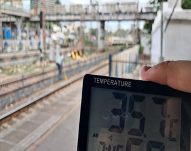
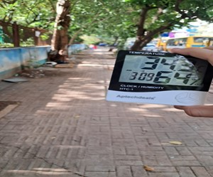
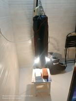
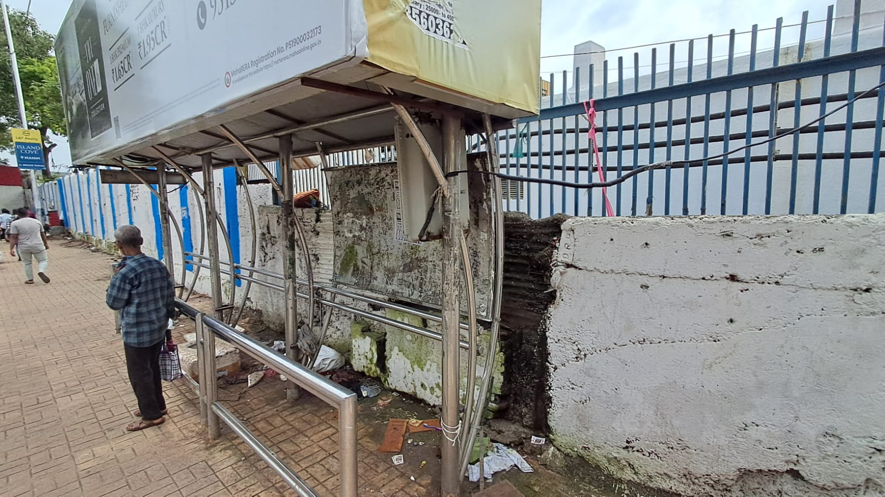
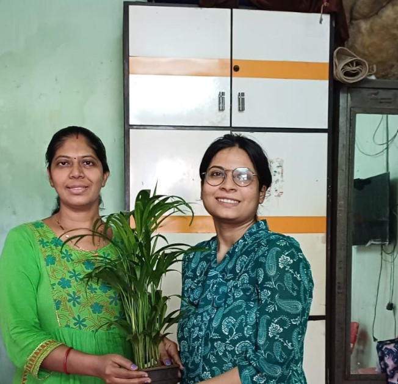

GROUP 10 Community Project: Rise In Temperature In Mumbai
Temperature Scan
To measure the effects of urban heat island in real life, we decided to measure temperatures of two close by but very different localities. We chose Mahim Junction Station for the warm section as it was largely treeless area due to the railway station and roadways around it, with our cooler section chosen to be the park near Hinduja hospital that was a relatively forested area. After around 15 minutes of scanning for both regions we found a 1.4 to 1.7 C difference between both locations. These were recorded in sunny conditions at almost the same time. We believe that this effect will be a lot more potent if we compared these findings to those between Dharavi and Sanjay Gandhi National Park.
 Mahim Station (Left) Hinduja Hospital (Right)
Brick Experiment
To test out the power of general purpose paint that is used for terraces, we created an experiment where we coated a brick in 3 layers of a commercial grade paint in the way it was inteneded by the instructions, and kept 1 brick unpainted, both being around 3 kilograms in weight. They were kept in laboratory conditions with 2 100 W tungsten filament bulbs hanging a few inches on top of them acting as light source, since it was the rainy season and continous exposure to the sun was rare. After around 75 Minutes of Running the experiment, a temperature varaiation of 0.9 degree was found, with no signs of stopping. This resulted in the conclusion of the experiment as having clearly shown the power of commercial grade reflective paint.
Experimental Setup
BEST work
We decided to use our research material by contacting BEST using their publicly provided email address to provide them with ideas that we feel will help more people use BEST. The email was sent on 17th July and was acknowledged by BEST on the 24th. We also scoured through Mumbai District to find badly damaged bus stops. we finally decided to inquire for Mahim Station Bus stop due to its highly damaged condition, and launched an inquiry through Mahim Bus Depot
Mahim Station Bus Stop
Plant Donation
We researched, and found out the importance of plants at home to beat not only indoor pollution but also cool the house through similiar effects that cause urban heat island effect. We found out that snake plant, spider plant, aloe vera, Ferns and Rubber Plant can not only cool the surroundings, but also withstand mumbai temperatures and are easy to maintain. thus we donated some of these to neighboring houses for them to care.
Plant Donation